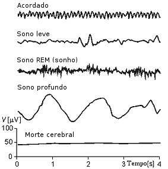
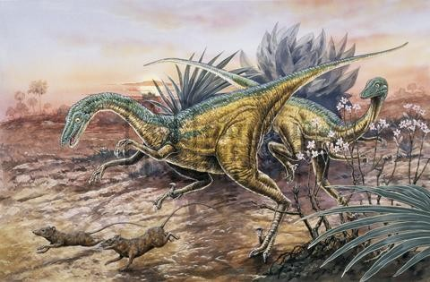
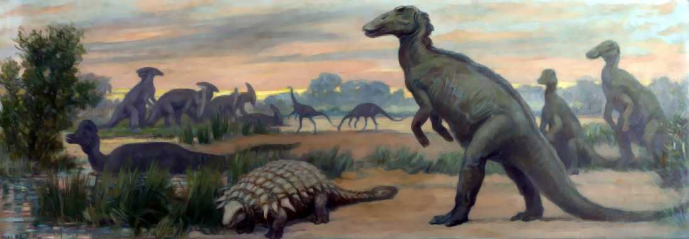
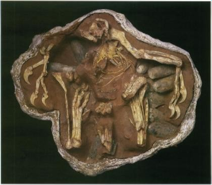
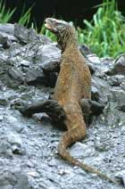

Prometeu atravessa uma crise de justa indignação. Ele concedeu a civilização a uma humanidade confusa e supersticiosa, e como castigo Zeus o acorrentou a uma rocha para que um abutre venha devorar-lhe o fígado. No trecho que se segue à citação acima, Prometeu descreve os principais dons, além do fogo, que ele outorgou à humanidade. São eles, pela ordem: a astronomia, a matemática, a escrita, a domesticação dos animais, o uso da roda, os navios, a medicina e a adivinhação através de sonhos e outros métodos. O dom final choca nossos ouvidos como algo estranho. Juntamente com o relato da expulsão do Éden no Gênese, Prometeu acorrentado parece ser um dos principais trabalhos da literatura ocidental que apresentam uma alegoria viável da evolução do homem — embora neste caso concentrando-se muito mais no "evolvedor" do que no "evolvido". "Prometeu" significa "previsão" em grego, aquela qualidade aparentemente relacionada com os lobos frontais do neocórtex; a previsão e a ansiedade encontram-se presentes no retrato da personagem de Ésquilo.
Qual a ligação existente entre os sonhos e a evolução do homem? Ésquilo talvez esteja dizendo que nossos ancestrais pré-humanos viveram suas vidas em um estado semelhante aos nossos sonhos; e que um dos principais benefícios do desenvolvimento da inteligência humana é nossa capacidade de compreender a verdadeira natureza e a importância dos sonhos.
Existem, ao que parece, três estados mentais principais nos seres humanos: vigília, sono e sonho. O eletrencefalograma, que detecta as ondas cerebrais, registra padrões bastante distintos de atividade elétrica no cérebro durante esses três estados17. As ondas cerebrais representam correntes e voltagens muito pequenas produzidas pelo circuito elétrico do cérebro. As potências desses sinais ondulatórios cerebrais são medidas em microvolts. As frequências típicas encontram-se entre 1 e mais ou menos 20 hertz (ou ciclos por segundo) – menos do que 60 ciclos por segundo, a frequência das correntes alternadas nas instalações elétricas.

[Imagem: Os padrões eletrencefalográficos característicos de um homem normal em vigília, no sono e durante o sonho.]
Mas para que serve o sono? Não há dúvida de que, se permanecemos acordados durante muito tempo, o organismo produz substâncias neurequímicas que literalmente nos forçam a dormir. Os animais com privação de sono geram tais moléculas em seu líquido cefalorraquidiano, e a injeção de líquido cefalorraquidiano dos animais privados de sono provoca sono em outros animais perfeitamente despertos. É mister, então, que exista uma razão muito poderosa para o sono.
A resposta convencional da fisiologia e da medicina popular é que o sono possui um efeito restaurador; é uma oportunidade para o corpo ordenar a esfera física e mental longe das necessidades do dia-a-dia. Mas as provas reais em favor desse ponto de vista, a não ser sua aceitação comum, parecem esparsas.
Além disso, existem alguns aspectos capazes de trazer preocupação no que diz respeito à repressão. Por exemplo, qualquer animal é excepcionalmente vulnerável quando adormecido, mesmo considerando que os animais, em sua maioria, costumam dormir em ninhos, cavernas, buracos de árvores ou troncos, ou em locais recônditos ou camuflados. Mesmo assim, sua impotência durante o sono permanece grande. Nossa vulnerabilidade noturna é muito evidente; os gregos consideravam irmãos Morfeu e Tanatos, os deuses do sono e da morte.
A menos que exista alguma necessidade biológica excepcionalmente forte para o sono, a seleção natural teria favorecido a evolução dos animais que não dormem. Enquanto existem animais — a preguiça de dois dedos, o tatu, o gambá e o morcego — que, pelo menos em estado de torpor sazonal, dormem dezenove ou vinte horas por dia, existem outros — o musaranho comum e a toninha de Dall (Phocoenoides dalli) — que dormem muito pouco. Existem também seres humanos que necessitam apenas de uma a três horas de sono por noite. Costumam ter dois ou três empregos, aproveitar a vida noturna enquanto suas esposas sucumbem à exaustão, mas assim mesmo parecem levar uma vida alerta, plena e construtiva. A história familiar sugere que essas predisposições são hereditárias. Em um caso, tanto o homem quanto sua filha pequena eram acometidos dessa bênção ou maldição, o que muito consternava a esposa sonolenta, que acabou por pedir o divórcio em razão dessa insólita incompatibilidade. Ele obteve a custódia da filha.
Esses exemplos sugerem que a hipótese recuperadora do sono, no mínimo, não representa tudo.
Contudo, o sono é muito antigo. Sob o aspecto eletrencefalográfico, nós o compartilhamos com todos os primatas e quase todos os outros mamíferos e aves: pode-se estender até os répteis. A epilepsia do lobo temporal e seu estado de comportamento automático inconsciente pode ser provocada em alguns indivíduos pela estimulação elétrica espontânea da amígdala*, muito abaixo do lobo temporal, em frequência de alguns ciclos por segundo (alguns hertz). Crises convulsivas não muito diferentes do sono têm sido relatadas quando um paciente epiléptico está dirigindo um automóvel ao pôr ou ao nascer do sol ao longo de uma cerca de estacas pontiagudas entre ele e o sol: a uma determinada velocidade, as estacas interceptam o sol na exata velocidade crítica capaz de produzir uma oscilação na frequência ressonante para iniciar tais crises. O ritmo circadiano, o ciclo diário da função fisiológica, ocorre até mesmo em animais tão inferiores quanto os moluscos.
Uma vez que um estado de certa forma semelhante aos sonhos pode ser provocado pela estimulação de outras regiões límbicas abaixo do lobo temporal, como descrevemos adiante, os centros que iniciam o sono e os sonhos não devem situar-se muito distantes nos recessos do cérebro.
Existem alguns indícios recentes de que os dois tipos de sono, com ou sem sonhos, dependem do estilo de vida do animal. Truett Allison e Domenic Ciccheti, da Universidade de Yale, descobriram que os predadores são estatisticamente muito mais propensos aos sonhos do que as presas, que por sua vez são mais propensas ao sono sem sonhos. Todos esses estudos foram realizados com mamíferos e se aplicam apenas às diferenças entre as espécies, e não dentro delas. No sono com sonhos, o animal fica intensamente imobilizado e notavelmente impassível aos estímulos externos. O sono sem sonhos é muito mais superficial e já temos visto cães ou gatos apurando seus ouvidos a um ruído quando estão, aparentemente, em sono profundo. Também é comumente sustentado que quando os cães dormindo movem suas pernas em uma espécie de movimento de corrida, estão sonhando com a caça. O fato de o sono profundo com sonhos ser raro entre as presas hoje em dia parece claramente um produto da seleção natural. Ocorre que os organismos que hoje são presas podem ter tido ancestrais predadores, e vice-versa. Ademais, os predadores em geral são organismos com maior massa cerebral absoluta e maior relação entre a massa cerebral e a corporal do que suas presas.
Faz sentido que hoje, quando o sono é altamente evoluído, os animais obtusos sejam menos frequentemente imobilizados pelo sono profundo do que os mais espertos. Mas por que haveriam eles de dormir profundamente? Por que teria evoluído tal estado de profunda imobilização?
Talvez uma pista viável para a função original do sono seja encontrada no fato de os golfinhos, baleias e outros mamíferos aquáticos aparentemente dormirem muito pouco. De um modo geral, não existe lugar para se esconder no oceano. Seria a função do sono, ao invés de aumentar a vulnerabilidade do animal, diminuí-la? Wilse Webb, da Universidade da Flórida, e Ray Meddis, da Universidade de Londres, sugeriram ser esse o caso. O estilo de sono de cada organismo é finamente adaptado à ecologia do animal. É concebível que animais estúpidos demais para ficarem quietos por iniciativa própria sejam, durante períodos de alto risco, imobilizados pelo braço implacável do sono. Esse ponto parece particularmente claro para os filhotes dos animais predadores; não apenas os filhotes de tigres são cobertos por uma coloração protetora soberbamente eficaz, como também dormem muito. Essa é uma noção interessante e provavelmente, pelo menos em parte, verdadeira. Mas não explica tudo. Por que é que os leões, que têm poucos inimigos naturais, dormem tanto? Essa indagação não representa uma objeção esmagadora, tendo em vista que os leões podem ter evoluído a partir de animais que não tinham a sua realeza. Da mesma forma, os gorilas adolescentes, que têm pouco a temer, mesmo assim constroem toda noite sua cama para dormir — talvez porque tenham evoluído a partir de predecessores mais vulneráveis. Ou, talvez, outrora os ancestrais dos leões e gorilas temessem predadores ainda mais violentos.
A hipótese da imobilização parece particularmente viável à luz da evolução dos mamíferos, que surgiram em uma época dominada por répteis sibilantes, estrondosos e inteiramente aterrorizantes. Mas quase todos os répteis têm sangue frio18 e, à exceção dos que vivem nos trópicos, são forçados a adotar a imobilização noturna. Os mamíferos têm sangue quente e são capazes de funcionar à noite. Os nichos ecológicos noturnos não-tropicais podem ter sido quase desocupados no Período Triásico, há uns 200 milhões de anos. De fato, Harry Jerison sugeriu que a evolução de mamíferos foi acompanhada do desenvolvimento de versões então extremamente requintadas (e agora comuns) de audição e olfato, sentidos para a percepção das distâncias e dos objetos à noite; e que o sistema límbico evoluiu a partir da necessidade de processar a rica sucessão de dados obtidos pelos sentidos recentemente elaborados. (Grande parte da informação visual processada nos répteis não é feita no cérebro, mas na retina; o aparelho de processamento óptico no neocórtex foi um desenvolvimento evolutivo mais tardio.)

[Imagem: Desenho de um Saurornithoides, pequeno dinossauro inteligente, apanhando mamíferos. São conhecidos espécimes do Canadá e da República Popular da Mongólia, no Cretáceo.]
Talvez fosse essencial para os mamíferos primitivos permanecerem imobilizados e escondidos durante as horas claras do dia, que eram governadas pelos répteis predadores. Estou configurando um panorama no final do Mesozoico, no qual os mamíferos dormem rigorosamente durante o dia e os répteis à noite. Mas, à noite, mesmo os protomamíferos carnívoros inferiores devem ter oferecido uma real ameaça aos répteis imobilizados pelo frio, e particularmente a seus ovos.
A julgar por seus volumes intracranianos, os dinossauros eram, em comparação com os mamíferos, notavelmente obtusos. Para citar alguns exemplos "bem conhecidos", o Tyrannosaurus rex tinha um volume cerebral de aproximadamente 200 cm³; o Brachiosaurus, 150; o Triceratops, 70; o Diplodocus, 50; o Stegosaurus, 30 cm³. Nenhum deles aproximou-se do chimpanzé em termos de massa cerebral absoluta; o Stegosaurus, que pesava 2 toneladas, era, com toda a certeza, infinitamente mais estúpido que o coelho. Quando os grandes pesos corporais dos dinossauros são levados em consideração, a pequenez de seus cérebros torna-se ainda mais evidente. O Tyrannosaurus pesava 8 toneladas, o Diplodocus, 12 e o Brachiosaurus, 87. A relação entre peso cerebral e corporal do Brachiosaurus era 10 000 vezes menor do que no homem. Da mesma forma que os tubarões são os peixes com os maiores cérebros em relação ao peso corporal, os dinossauros carnívoros, como o Tyrannosaurus, eram relativamente bem dotados de cérebro em relação aos herbívoros, como o Diplodocus e o Brachiosaurus. Estou certo de que o Tyrannosaurus era uma terrível e eficiente máquina assassina. Mas, apesar de seu aspecto aterrorizante, os dinossauros parecem vulneráveis aos dedicados e inteligentes adversários — tais como os mamíferos primitivos.
Nossa cena mesozoica possui um toque curiosamente vampiresco, com os répteis carnívoros caçando os espertos mamíferos adormecidos durante o dia, e os mamíferos carnívoros caçando os estúpidos répteis imóveis durante a noite. Embora os répteis enterrassem seus ovos, é improvável que eles protegessem eficientemente os ovos ou filhotes. Existem muito poucas menções de tal comportamento, mesmo nos répteis contemporâneos, e é difícil imaginar o Tyrannosaurus rex chocando uma ninhada de ovos. Por esses motivos, os mamíferos devem ter vencido a guerra primordial dos vampiros; pelo menos alguns paleontólogos acreditam que a extinção dos dinossauros foi acelerada através da predação noturna dos ovos reptilianos pelos mamíferos primitivos. Dois ovos de galinha19 no café da manhã, isso é tudo — pelo menos aparentemente — que deve ter sobrado dessa arcaica dieta dos mamíferos.
Os dinossauros mais inteligentes de acordo com o critério da relação entre massa cerebral e corporal são os Saurornithoides, cujos cérebros pesavam em geral 50 gr para uma massa corporal de mais ou menos 50 kg, o que os situa próximo ao avestruz. De fato, eles se assemelham ao avestruz. Pode ser muito elucidativo examinar moldes internos fósseis de suas caixas cranianas. Provavelmente caçavam pequenos animais para comer e usavam os quatro dedos de seus apêndices semelhantes a mãos para muitos propósitos diferentes. Constituem animais interessantes sobre os quais especular. Se todos os dinossauros não tivessem sido extintos misteriosamente há uns 65 milhões de anos, teria o Saurornithoides continuado a evoluir para formas cada vez mais inteligentes? Teriam eles aprendido a caçar grandes mamíferos em grupo e portanto, talvez, evitado a grande proliferação de mamíferos que se seguiu ao final da Era Mesozoica? Se não tivesse ocorrido a extinção dos dinossauros, seriam hoje as formas de vida dominadoras na Terra os descendentes dos Saurornithoides, escrevendo e lendo livros, especulando sobre o que teria acontecido se os mamíferos tivessem prevalecido? Pensariam as formas dominantes que a aritmética de base 8 era bastante natural e a base 10, um "fricote" ensinado apenas na "matemática moderna"?
Muito daquilo que consideramos importante acerca das últimas dezenas de milhões de anos da história da Terra gira em torno da extinção dos dinossauros. Existem literalmente dúzias de hipóteses tentando explicar esse fato, que aparentemente se deu com notável rapidez e de modo completo, tanto nas formas terrestres quanto aquáticas. Todas as explicações propostas parecem apenas parcialmente satisfatórias. Variam da transformação climática radical até a predação pelos mamíferos, sem falar na suposta extinção de uma planta com aparentes propriedades laxativas, caso em que os dinossauros teriam morrido de prisão de ventre.

[Imagem: Reconstrução de uma paisagem cretácea numa região pantanosa no Canadá. Na maioria, os dinossauros mostrados são bípedes e herbívoros. De acordo com nossos conhecimentos, todas essas formas foram extintas pouco depois.]
Uma das hipóteses mais interessantes e promissoras, sugerida pela primeira vez por I. S. Shklovskii, do Instituto de Pesquisa Cósmica da Academia de Ciências de Moscou, é a de que os dinossauros morreram por causa de um evento de supernova nas proximidades — a explosão de uma estrela moribunda a algumas dezenas de anos-luz de distância, que provocou um imenso fluxo de partículas dotadas de alta carga energética. Esse fluxo penetrou em nossa atmosfera, alterou suas propriedades e, talvez, pela destruição do ozônio atmosférico, deixou passar quantidades letais de radiação solar ultravioleta. Os animais noctívagos (como os mamíferos da época) e os do fundo do mar (como os peixes) poderiam ter sobrevivido a essa intensidade maior de raios ultravioleta; mas os animais de hábitos diurnos que habitavam a terra ou a superfície das águas teriam sido seletivamente destruido.20 Tal desastre seria apropriadamente nomeado – a própria palavra significa "má estrela" [dis + astro].
Se essa sequência de acontecimentos estiver correta, o principal rumo da evolução biológica na Terra nos últimos 65 milhões de anos, e até a existência dos seres humanos, pode ser rastreada até a morte de um sol distante. Talvez outros planetas girassem em torno daquela estrela; talvez um daqueles planetas gozasse de uma biologia de caprichosa evolução através de bilhões de anos. A explosão da supernova teria certamente extinguido todas as formas de vida naquele planeta e provavelmente até lançado sua atmosfera no espaço. Será que devemos nossa existência a uma fantástica catástrofe estelar que destruiu biosferas e mundos?
Após a extinção dos dinossauros, os mamíferos mudaram-se para os nichos ecológicos de hábitos diurnos. O medo do escuro manifestado pelos primatas deve constituir aquisição relativamente recente. Washburn notificou que filhotes de babuínos e outros primatas jovens aparentemente só nascem com três medos inatos — de cair, de cobras e do escuro —, que correspondem respectivamente aos perigos representados pela gravitação newtoniana aos que se abrigam nas árvores, pelos nossos antigos inimigos répteis e pelos mamíferos predadores noturnos que devem ter sido especialmente aterrorizantes para os primatas visualmente orientados.

[Imagem: Oviraptor em seu ninho. Durante algum tempo acreditou-se que fosse um ninho de Protoceratops sendo atacado por um oviraptor, desmentido nos anos 1990.]
Se a hipótese de uma guerra vampiresca é verdadeira — e é no máximo uma hipótese provável —, a função do sono está profundamente inserida no cérebro dos mamíferos; desde as épocas mais primitivas dos mamíferos, o sono desempenhava um papel fundamental na sobrevivência. Desde que, para os mamíferos primitivos, as noites sem sono teriam sido mais perigosas para a sobrevivência do que as noites sem atividade sexual, o sono deve ter uma força mais poderosa do que o sexo — o que, pelo menos na maioria dos casos, parece corresponder à verdade.
Contudo, finalmente, os mamíferos evoluíram a um ponto tal em que o sono podia ser modificado pelas circunstâncias já diferentes. Com a extinção dos dinossauros, a luz do dia subitamente se tornou um ambiente propício aos mamíferos. Não era mais compulsória a imobilização durante o dia e uma ampla variedade de padrões de sono se desenvolveu lentamente, inclusive a correlação contemporânea dos predadores mamíferos com extensos sonhos e das presas mamíferas com um sono mais vigilante, destituído de sonhos. Talvez as pessoas que se satisfazem com apenas algumas horas de sono à noite sejam os precursores de uma nova adaptação humana que aproveitará integralmente todas as horas do dia. Eu, de minha parte, confesso abertamente que invejo tal adaptação.

[Imagem: Varanus komodensis, o dragão-de-komodo, ilha de Komodo, Indonésia.]
Essas conjecturas sobre as origens dos mamíferos constituem uma espécie de mito científico: podem conter algum germe de verdade, mas têm pouca probabilidade de explicar tudo. Coincidência ou não, os mitoscientíficos têm relação com mitos mais antigos. É absolutamente possível que sejamos capazes de inventar mitos científicos somente por termos sido anteriormente expostos a mitos de outro tipo. Entretanto, não posso resistir a estabelecer a ligação entre este relato da origem dos mamíferos e outro curioso aspecto do mito da expulsão do Paraíso no Gênese, pois é um réptil, naturalmente, que oferece o fruto da ciência do bem e do mal — as funções neocorticais abstratas e morais — para Adão e Eva.
Restam ainda alguns répteis grandes na Terra, sendo o mais notável o dragão-de-komodo da Indonésia — tem sangue frio, não é muito inteligente, mas trata-se de um predador que demonstra importante firmeza de propósito. Com enorme paciência, ele tocaia uma corça ou um javali adormecido, e subitamente golpeia a presa com a pata traseira, segurando-a até que ela perca todo o sangue e morra. As presas são localizadas através do cheiro. Um dragão caçador arrasta-se e meneia o corpo com a cabeça baixa e sua língua bifurcada move-se rapidamente pelo chão à procura de vestígios químicos. Os adultos maiores pesam aproximadamente 135 quilos, têm 3 metros de comprimento e vivem talvez mais de um século. A fim de proteger seus ovos, o dragão cava trincheiras com profundidade de 2 a 9 metros – provavelmente uma defesa contra os mamíferos devoradores de ovos (e contra eles mesmos — os adultos eventualmente ficam à tocaia de um ninho, esperando pela eclosão que lhes proporcionará pequeno acepipe para o almoço). Outra evidente adaptação aos predadores é o fato de o filhote do dragão viver em árvores.
A notável elaboração dessa adaptação mostra claramente que os dragões estão em apuros no planeta Terra. O dragão-de-komodo vive de forma selvagem somente nas ilhas Sonda Menores21. Só restam cerca de 2.000 espécimes. A obscuridade do local sugere imediatamente que os dragões estão próximos da extinção em virtude da ação predatória dos mamíferos, principalmente do homem, conclusão tirada da história nos últimos dois séculos. Todos os dragões com adaptações menos extremas ou habitats menos remotos estão mortos. Eu até me pergunto se a separação sistemática de massa cerebral para uma determinada massa corporal entre os mamíferos e os répteis não seria o resultado de uma extinção sistemática dos dragões inteligentes pelos predadores mamíferos. De qualquer forma, é muito provável que a população de grandes répteis venha diminuindo continuamente desde o final da era Mesozoica, e que há mil ou 2 000 anos existisse um número maior deles do que existe hoje.
A implacável hostilidade mútua entre o homem e o dragão, como exemplifica o mito de São jorge, é mais forte no Oriente. (No capítulo 3 do Gênese, Deus ordena uma inimizade eterna entre os répteis e os seres humanos.) Não corresponde, contudo, a uma anomalia ocidental. É um fenômeno de ocorrência mundial. Seria apenas uma casualidade o fato de os sons humanos que ordenam o silêncio ou atraem a atenção parecerem estranhamente imitativos do silvo dos répteis? Seria possível que os dragões representassem um problema para nossos ancestrais proto-humanos de alguns milhões de anos atrás, e o terror que provocaram e as mortes que causaram terem ajudado a promover a evolução da inteligência humana? Ou será que a metáfora da serpente se refere ao uso do componente reptiliano agressivo e ritualístico de nosso cérebro na evolução do neocórtex? Com uma exceção, o relato da tentação por um réptil no Éden constitui o único exemplo da Bíblia onde o homem compreende a linguagem dos animais. Quando tememos os dragões, estaríamos temendo uma parte de nós mesmos? De uma forma ou de outra, havia dragões no Éden.A penetração dos mitos de dragões nas lendas populares provavelmente não é casual22. A implacável hostilidade mútua entre o homem e o dragão, como exemplifica o mito de São jorge, é mais forte no Oriente. (No capítulo 3 do Gênese, Deus ordena uma inimizade eterna entre os répteis e os seres humanos.) Não corresponde, contudo, a uma ano malia ocidental. É um fenômeno de ocorrência mundial. Seria apenas uma casualidade o fato de os sons humanos que ordenam o silêncio ou atraem a atenção parecerem estranhamente imitativos do silvo dos répteis? Seria possível que os dragões representassem um problema para nossos ancestrais proto-humanos de alguns milhões de anos atrás, e o terror que provocaram e as mortes que causaram terem ajudado a promover a evolução da inteligência humana? Ou será que a metáfora da serpente se refere ao uso do componente reptiliano agressivo e ritualístico de nosso cérebro na evolução do neocórtex? Com uma exceção, o relato da tentação por um réptil no Éden constitui o único exemplo da Bíblia onde o homem compreende a linguagem dos animais. Quando tememos os dragões, estaríamos temendo uma parte de nós mesmos? De uma forma ou de outra, havia dragões no Éden.[Imagem: São Jorge matando o dragão, de Donatello. Chiesa di Orsanmichele, Florença.]
[Imagem: A tentação por uma serpente-homem e a expulsão do Éden. Michelangelo, teto da Capela Sistina.]
O fóssil mais recente de dinossauro data de mais ou menos 60 milhões de anos atrás. A família do homem (mas não o gênero Homo) tem algumas dezenas de milhões de anos. Poderiam ter existido criaturas humanas que realmente se defrontaram com o Tyrannosaurus rex? Poderiam ter existido dinossauros que escaparam à extinção no final do Período Cretáceo? Seriam os sonhos vívidos e os medos comuns de “monstros”, que as crianças manifestam logo que são capazes de falar, vestígios evolutivos de respostas bastante adaptativas — como ocorre com os babuínos — aos dragões e corujas23?
Para que funções servem os sonhos hoje? Um ponto de vista, publicado em renomado jornal científico, sustenta que a função dos sonhos é a de nos acordar um pouco, de vez em quando, para verificar se há alguém querendo devorar-nos. Mas acontece que os sonhos ocupam uma parte relativamente tão pequena do sono normal que essa explicação não parece muito convincente. Além disso, como já vimos, os indícios apontam exatamente para o lado oposto ― hoje são os predadores mamíferos, e não as presas mamíferas, que caracteristicamente apresentam sonhos ao dormir. Muito mais plausível é a explicação, baseada em computador, de que os sonhos são um extravasamento do processamento inconsciente da experiência do dia, a partir da decisão do cérebro de quanto dos acontecimentos diários temporariamente arquivados em um tipo de acumulador (buffer) serão conduzidos à memória de longo prazo. Os acontecimentos de ontem frequentemente aparecem nos meus sonhos; os de dois ou três dias atrás, muito mais raramente. Entretanto, o modelo de descarga de buffer* não parece capaz de explicar tudo, uma vez que não explica os disfarces tão característicos da linguagem simbólica dos sonhos, um aspecto destacado pela primeira vez por Freud. Tampouco explica as poderosas emoções ou sentimentos do sonho; eu acredito que muitas pessoas tenham sentido infinitamente mais medo de algo com que sonharam do que de qualquer outra coisa que tenham experimentado em estado de vigília.
As funções de descarga de buffer* e de armazenamento da memória dos sonhos apresentam algumas implicações sociais interessantes. O psiquiatra americano Ernest Hartmann, da Universidade Tufts, proporcionou indícios anedóticos, mas razoavelmente persuasivos, de que as pessoas ligadas a atividades intelectuais durante o dia, principalmente atividades intelectuais estranhas, necessitam de mais horas de sono à noite, enquanto, de modo geral, aquelas envolvidas em tarefas repetitivas e intelectualmente pouco desafiadoras podem passar com muito menos sono. Entretanto, em parte por motivos de conveniência organizacional, as sociedades modernas são estruturadas como se todos os seres humanos tivessem as mesmas necessidades de sono; e em muitas partes do mundo existe uma impressão de retidão moral no fato de se acordar cedo. A quantidade de sonodecorrer dos passados tempos selvagens? É bastante coerente, com o que sabemos a respeito da exigida para a descarga de buffer* dependeria então de quanto teríamos pensado e experimentado desde o último período de sono. (Não existe indício de que a causalidade ande para trás: as pessoas drogadas com fenobarbital não apresentam, durante os períodos intersticiais de vigília, feitos intelectuais incomuns.) Quanto a isso, seria interessante examinar indivíduos com reduzidas necessidades de sono para determinar se a fração de tempo que gastam sonhando é maior do que aquela dos indivíduos de sono normal, e determinar se essa quantidade de tempo de sono aumenta com a qualidade de suas experiências de aprendizado no estado de vigília.
Michel Jouvet, um neurologista francês da Universidade de Lyon, descobriu que o sono de sonhos é desencadeado na ponte, que, embora se localize no rombencéfalo, representa um desenvolvimento evolutivo tardio e essencialmente mamífero. Por outro lado, Penfield descobriu que a estimulação elétrica profunda do lobo temporal e abaixo deste, no neocórtex e no complexo límbico, é capaz de produzir um estado de vigília nos epilépticos muito semelhante ao dos sonhos destituídos de seus aspectos simbólicos e fantasiosos. Também pode provocar o fenômeno do déjà vu. Grande parte do conteúdo afetivo dos sonhos, inclusive o medo, também pode ser provocada por tal estimulação elétrica.
Uma vez tive um sonho que vai me atormentar para sempre. Sonhei que estava folheando casualmente um grosso livro de história. Percebia, pelas ilustrações, que o tempo passava lentamente, da maneira habitual nos livros desse tipo, através dos séculos — os tempos clássicos, a Idade Média, o Renascimento e assim por diante, gradualmente atingindo os tempos modernos. Mas então houve a Segunda Guerra Mundial e faltavam ainda duzentas páginas para o fim do livro. Com avultada excitação, ocupei-me do trabalho até ter a certeza de que tinha ultrapassado meu próprio tempo. Era um livro de história que incluía o futuro — seria como virar a página de 31 de dezembro do Calendário Cósmico e encontrar o 1º de janeiro em todos os seus pormenores. Ofegante, tentei literalmente ler o futuro. Mas era impossível. Eu era capaz de distinguir as palavras isoladas. Podia até discernir as cerifas nos tipos das letras. Mas não era capaz de juntar as letras para formar as palavras, ou as palavras em frases. Eu estava aléxico.
Talvez isso seja simplesmente uma metáfora da imprevisibilidade do futuro. Mas minha invariável experiência nos sonhos é de que sou incapaz de ler. Eu percebo, por exemplo, um sinal de PARE por sua cor e por sua forma octogonal, mas não posso ler a palavra PARE, embora saiba que ela está lá. Tenho a impressão de compreender o significado de uma página impressa, mas não posso lê-la palavra por palavra ou frase por frase. Não posso realizar com certeza nem mesmo operações aritméticas simples em estado onírico. Faço uma série de confusões verbais sem aparente significado simbólico, como misturar Schumann e Schubert. Sou um pouco afásico e inteiramente aléxico. Nem todo mundo que conheço tem a mesma dificuldade cognitiva em sonho, mas as pessoas costumam ter algum tipo de dificuldade. (A propósito, as pessoas que já nascem cegas têm sonhos auditivos e não visuais.) O neocórtex não é completamente desligado no estado onírico, mas é certo que parece sofrer importantes disfunções.
O aparente fato de os mamíferos e aves sonharem, enquanto seus ancestrais comuns, os répteis, não o fazem, naturalmente é digno de nota. Importantes linhas evolutivas além dos répteis têm apresentado sonhos e talvez os requeiram. O sono das aves eletricamente revelado é episódico e breve. Se elas sonham, isso ocorre durante apenas um segundo de cada vez. Mas as aves, em um sentido evolutivo, estão muito mais próximas dos répteis do que os mamíferos. Se fossem apenas os mamíferos, o argumento seria mais frágil; mas quando os dois principais grupos taxonômicos que se desenvolveram a partir dos répteis são compelidos a sonhar, devemos encarar a coincidência com seriedade. Por que um animal que descendeu do réptil tem de sonhar, enquanto os outros animais não têm? Seria porque o cérebro reptiliano continua presente e funcionando?
É extremamente raro, no estado onírico, nos darmos conta de que “isto é apenas um sonho”. De uma maneira geral, nós revestimos o conteúdo do sonho com a realidade. Não existem leis de coerência interna às quais os sonhos tenham de obedecer obrigatoriamente. O sonho é um mundo de magia e ritual, paixão e fúria, mas muito raramente de ceticismo e razão. Na metáfora do cérebro trino*, os sonhos são em parte função do complexo-R* e do córtex límbico, mas não da parte racional do neocórtex.
As experiências sugerem que, à medida que a noite vai passando, nossos sonhos passam a tratar cada vez mais de assuntos do nosso passado, atingindo até a meninice e a primeira infância. Ao mesmo tempo, o processo primário e o conteúdo emocional do sonho também aumentam. Somos muito mais propensos a sonhar com as paixões do berço imediatamente antes de acordar do que logo após adormecer. É como se a integração da experiência do dia em nossa memória, o ato de forjar novas ligações neurais, constituísse uma tarefa mais fácil ou mais premente. À medida que a noite passa e essa função é satisfeita, surgem os sonhos de conteúdo mais afetivo, os assuntos mais bizarros, os medos e desejos e outras emoções intensas do material onírico. Tarde da noite, quando a quietude é total e os sonhos obrigatórios já foram sonhados, as gazelas e os dragões começam a se mover.
Um dos instrumentos mais importantes para o estudo do estado onírico foi concebido por William Dement, um psiquiatra da Universidade de Stanford, que tem o máximo de sanidade mental possível, mas um nome excessivamente curioso para um homem de sua profissão. O estado onírico é acompanhado de um movimento ocular rápido (MOR), capaz de ser detectado por eletrodos levemente afixados às pálpebras durante o sono, e por um padrão peculiar de ondas no EEG. Dement descobriu que todos nós sonhamos muitas vezes por noite. Ao ser acordado, no meio do sono com MOR, um indivíduo habitualmente se lembrará do seu sonho. Descobriu-se, através dos critérios do MOR e do EEG, que mesmo as pessoas que declaram nunca ter sonhos os têm da mesma forma que as outras; e, quando despertadas na hora certa, admitem com surpresa que sonharam. O cérebro humano encontra-se em estado fisiológico peculiar durante o sonho, e nós sonhamos com bastante frequência. Embora talvez 20 por cento dos indivíduos acordados durante o sono com MOR não se lembrem de seus sonhos, e uns 10 por cento dos acordados durante o sono sem MOR relatem sonhos, identificaremos, por conveniência, o MOR e os padrões eletrencefalográficos correspondentes com o estado onírico.
Existem alguns indícios de que o sonho é necessário. Quando seres humanos ou outros mamíferos são privados do sono com MOR (acordando-se assim que surgem os padrões característicos do MOR e do EEG), o número de inícios de sonho por noite se eleva e, nos casos graves, ocorrem alucinações durante o dia — quer dizer, sonhos acordados. Já afirmei que o MOR e os padrões eletrencefalográficos dos sonhos são curtos nas aves e ausentes nos répteis. Os sonhos parecem representar primariamente uma função dos mamíferos. E, o que é mais importante, os sonhos são mais vívidos nos seres humanos no período pós-natal imediato. Aristóteles afirmou quase categoricamente que as crianças pequenas não sonham. Pelo contrário, descobrimos que elas podem estar sonhando quase o tempo todo. Os recém-nascidos prematuros despendem mais de metade das horas de sono no estado onírico de MOR. Nas crianças nascidas com algumas semanas de antecipação, o período de sonho representa três quartos ou mais do tempo total de sono. Anteriormente, em sua vida intrauterina, o feto podia passar o tempo todo sonhando. (Na realidade, os gatos recém-nascidos passam todo o tempo de sono com MOR.) A recapitulação sugeriria então que os sonhos representam uma função evolutiva precoce e fundamental dos mamíferos.
Existe ainda outra ligação entre a primeira infância e os sonhos: ambos são seguidos de amnésia. Quando saímos de qualquer um dos dois estados, temos muita dificuldade de lembrar o que experimentamos. Em ambos os casos, eu diria, o hemisfério esquerdo do neocórtex, responsável pela memória analítica, funciona de modo ineficaz. Uma explicação alternativa é a de que tanto nos sonhos quanto na tenra idade experimentamos uma espécie de amnésia traumática — as experiências são dolorosas demais para serem lembradas. Mas muitos sonhos que esquece-mos são muito agradáveis, e é difícil acreditar que a primeira infância seja assim tão desagradável. Atente-se também para o fato de que muitas crianças parecem capazes de lembrar-se de experiências extremamente longínquas. A recordação de acontecimentos ocorridos no final do primeiro ano de vida não é extremamente rara, e existem exemplos possíveis de lembranças ainda mais remotas. Com três anos de idade perguntaram a meu filho Nicholas qual o acontecimento mais antigo que ele podia lembrar e ele respondeu sussurrando, com o olhar a meia distância: “Era tudo vermelho e eu sentia muito frio”. Ele nascera de parto cesáreo. Deve ser muito improvável, mas eu me pergunto se seria possível ser essa a verdadeira recordação do nascimento. De qualquer forma, acho muito mais provável que a amnésia da infância e dos sonhos decorra do fato de que, nesses estados, nossas vidas mentais são determinadas quase que exclusivamente pelo complexo-R*, pelo sistema límbico e pelo hemisfério cerebral direito. Nos primórdios da infância, o neocórtex é subdesenvolvido; na amnésia, encontra-se prejudicado.
Existe uma estreita correlação entre a ereção do pênis ou do clitóris e o sono em fase de MOR, mesmo quando o conteúdo manifesto do sonho não apresenta quaisquer aspectos sexuais evidentes. Nos primatas, essas ereções estão ligadas ao sexo (claro!), à agressão e à manutenção da hierarquia social. Acho que, quando dormimos, uma parte de nós empenha-se em atividades bastante semelhantes às do macaco-de-cheiro que observei no laboratório de MacLean. O complexo-R* funciona nos sonhos dos seres humanos; os dragões podem ser ouvidos silvando ou bramindo, e os dinossauros ainda enchem os ares com seus rugidos.
Um excelente teste do mérito das ideias científicas é sua comprovação subsequente. A teoria é formada sobre indícios fragmentários, depois é realizada uma experiência, cujo resultado o proponente da teoria não poderia saber. Caso a experiência confirme a ideia original, esta é habitualmente tomada como grande apoio para a teoria. Freud sustentava que a grande maioria, se não toda a “energia psíquica” de nossas emoções e do material onírico oriundos do processo primário, tem origem sexual. O papel absolutamente essencial do interesse sexual em proporcionar a perpetuação da espécie faz com que essa ideia não pareça boba nem depravada, como era encarada pelos contemporâneos vitorianos de Freud. Carl Gustav Jung, por exemplo, sustentava que Freud exagerara intensamente na importância primordial do sexo nas questões do inconsciente. Mas agora, três quartos de século depois, as experiências no laboratório de Dement e outros psicólogos parecem apoiar Freud. Acho que seria necessário um puritanismo muito dedicado para negar alguma ligação entre a ereção do pênis ou do clitóris e o sexo. Aparentemente, segue-se que o sexo e os sonhos não são casualmente inter-relacionados, ao contrário disso, possuem laços profundos e fundamentais — embora os sonhos certamente participem do material ritualístico, agressivo e hierárquico do século XIX na sociedade vienense, muitos dos vislumbres de Freud parecem duradouros e corajosos, assim como válidos.
Foram realizados estudos estatísticos sobre os tipos mais comuns de sonhos — estudos que, pelo menos até certo ponto, esclarecem a natureza dos sonhos. Em uma pesquisa entre estudantes universitários, eram os seguintes os tipos mais frequentes de sonhos, pela ordem: (1) queda; (2) estar sendo perseguido ou atacado; (3) tentar repetidamente executar uma tarefa, sem sucesso; (4) diversas experiências acadêmicas de aprendizado; e (5) diversas experiências sexuais. O número (4) parece relacionar-se particularmente ao grupo tomado como amostra. Os outros, encontrados realmente nas vidas dos estudantes, provavelmente têm explicação geral, mesmo no caso de pessoas que não estudam.
O medo de cair parece estar claramente ligado a nossas origens arbóreas e é um medo que aparentemente compartilhamos com outros primatas. Se você vive numa árvore, a maneira mais fácil de morrer é cair. As outras três categorias de sonhos mais comuns são particularmente interessantes porque correspondem a funções agressivas, hierárquicas, ritualísticas e sexuais ― do domínio do complexo-R*. Outra estatística interessante mostra que quase metade das pessoas inquiridas relatou
sonhos com cobras, o único animal que conseguiu, sozinho, compor uma categoria, dentre vinte tipos mais comuns de sonhos. É naturalmente possível que muitos dos sonhos com cobras tenham uma interpretação freudiana direta. Contudo, dois terços dos indivíduos pesquisados relataram explicitamente sonhos sexuais. Considerando que, segundo Washburn, os filhotes de primatas demonstram um medo inato das cobras, é fácil imaginar que o mundo dos sonhos não aponta tanto direta quanto indiretamente para a arcaica hostilidade entre répteis e mamíferos.
Existe uma hipótese que me parece compatível com todos os fatos precedentes — a evolução do sistema límbico implicou uma maneira radicalmente nova de encarar o mundo. A sobrevivência dos mamíferos primitivos dependeu da inteligência, da discrição durante o dia e da dedicação à cria. O mundo visto pelo complexo-R* era bastante diferente. Em virtude da natureza aditiva da evolução cerebral, as funções do complexo-R* podiam ser utilizadas ou parcialmente desviadas, mas não ignoradas. Por conseguinte, desenvolveu-se um centro inibidor, abaixo daquilo que corresponde ao lobo temporal no homem, para desligar parte do funcionamento do cérebro reptiliano; e um centro de ativação evoluiu na ponte para ativar o complexo-R*, porém de forma inofensiva, durante o sono. É claro que esse ponto de vista tem alguns pontos notáveis de semelhança com o quadro pintado por Freud da repressão do id pelo superego (ou do inconsciente pelo consciente), e as expressões do id manifestam-se mais claramente através de lapsos, associações livres, sonhos e congêneres — ou seja, durante os interstícios da repressão do superego.
Com o enorme desenvolvimento do neocórtex nos mamíferos superiores e primatas, criou-se certa participação neocortical no estado onírico — a linguagem simbólica ainda é, afinal de contas, uma linguagem. (Isso se relaciona com as diferentes funções dos dois hemisférios do neocórtex, descritas no capítulo seguinte.) Mas a linguagem figurada dos sonhos continha importantes elementos sexuais, agressivos, hierárquicos e ritualísticos. O fantástico material do mundo dos sonhos pode dever-se à quase ausência de estimulação sensorial durante o sono. Há muito pouca comprovação da realidade no estado onírico. O predomínio de sonhos nas crianças de tenra idade, de acordo com este ponto de vista, ocorreria porque na infância a parte analítica do neocórtex quase não funciona. A ausência de sonhos nos répteis decorreria da falta de repressão do estado onírico nesses animais; segundo a descrição de Ésquilo, eles “sonham” acordados. Acredito que essa ideia possa explicar a estranheza — quer dizer, as diferenças de nossa consciência verbal em vigília — do estado onírico; sua ocorrência nos mamíferos e na fase neonatal dos seres humanos; sua fisiologia; e sua penetração no homem.
Descendemos de répteis e de mamíferos. Na repressão diurna do complexo-R* e na mobilização noturna dos dragões dos sonhos, cada um de nós pode estar reconstituindo a milenar guerra entre os répteis e os mamíferos. Apenas foram invertidas as horas da caça vampiresca.
Os seres humanos revelam o comportamento reptiliano tal como ele é. Se soltássemos inteiramente as rédeas dos aspectos reptilianos de nossa natureza, teríamos certamente um baixo potencial de sobrevivência. Em virtude de o complexo-R* achar-se tão intimamente entretecido na estrutura do cérebro, suas funções não podem ser inteiramente evitadas. Talvez o estado onírico permita, em nossa fantasia e em sua realidade, que o complexo-R* funcione regularmente, como se ainda regesse nossa natureza.
Se isso é verdadeiro, imagino, seguindo os passos de Ésquilo, que o estado de vigília dos outros mamíferos seja muito semelhante ao estado onírico dos seres humanos — no qual podemos reconhecer sinais, tais como a sensação de água correndo e o cheiro de madressilva, mas que possui um repertório extremamente limitado de símbolos tais como palavras; ali encontramos imagens sensitivas e emocionais vívidas, assim como compreensão intuitiva atuante, mas muito pouca análise racional; nesse estado, somos incapazes de realizar tarefas que exijam concentração prolongada; ali experimentamos curtos períodos de atenção e frequentemente distrações além de — o que é mais importante — um senso muito aguçado de individualidade ou do próprio eu, que desencadeia um penetrante fatalismo, um senso do imprevisível impacto de acontecimentos incontroláveis. Se foi daí que viemos, já fomos muito longe.